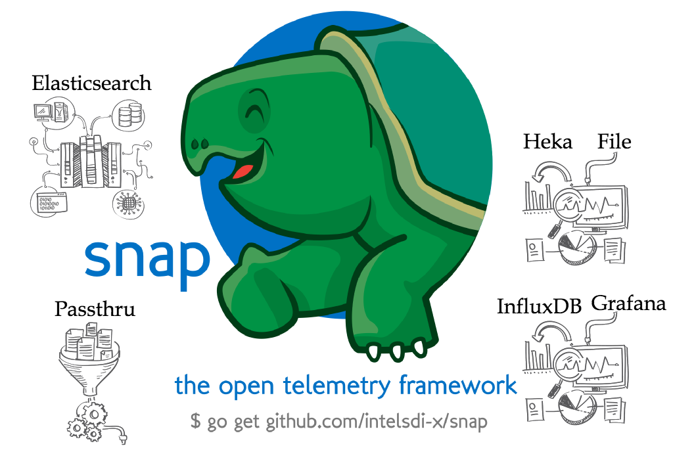

The Power and Elegance of
Reflection
GopherCon 2016
Created by Emily Gu / @CandySmurfy
https://candysmurf.github.io/GoReflectionTalk
Keyboard Shortcuts
| Full Screen | F |
| Next Slide | Space bar |
| Slide Notes | S |
| Thumbnail View | Esc |
View online at https://github.com/candysmurf/GoReflectionTalk
Note: Some slides move down instead of to the side, so use the space bar to advance slides.
About Me
Today is about Reflection in Go
I currently work for Intel Corporation as a cloud software engineer in the Software Defined Infrastructure (SDI-X) Emerging Tech group.
William Kennedy is my teacher for Go. His "mechanical sympathy" truly inspired me.
Prior to Go, I used Java, Spring Framework, RabbitMQ, Cassandra, Logstash, Elasticsearch...and worked on ECommerce, Big Data and Analytics.
Why I choose to talk about Reflection
My Project is Snap

Snap Plugin Framework

Collector Challenges

Sample JSON
{
"cluster_name": "elasticsearch",
"nodes": {
"jhO6RS8ORjOKfNP6pvwaBw": {
"timestamp": 1467525122508,
"name": "Superia",
"transport_address": "10.0.2.15:9300",
"host": "10.0.2.15",
"os": {
"timestamp": 1467525122530,
"cpu_percent": 30,
"load_average": 0.42,
"mem": {
"total_in_bytes": 1044631552,
"free_in_bytes": 65638400,
"used_in_bytes": 978993152,
"free_percent": 6,
"used_percent": 94
},
"swap": {
"total_in_bytes": 1211777024,
"free_in_bytes": 1199104000,
"used_in_bytes": 12673024
}
},
"process": {
"timestamp": 1467525122530,
"open_file_descriptors": 151,
"max_file_descriptors": 1048576,
"cpu": {
"percent": 4,
"total_in_millis": 5690
},
"mem": {
"total_virtual_in_bytes": 3219476480
}
},
"jvm": {
"timestamp": 1467525122530,
"uptime_in_millis": 42797,
"mem": {
"heap_used_in_bytes": 55298680,
"heap_used_percent": 5,
"heap_committed_in_bytes": 259719168,
"heap_max_in_bytes": 1065025536,
"non_heap_used_in_bytes": 44241384,
"non_heap_committed_in_bytes": 45834240,
"pools": {
"young": {
"used_in_bytes": 36094712,
"max_in_bytes": 69795840,
"peak_used_in_bytes": 69795840,
"peak_max_in_bytes": 69795840
},
"survivor": {
"used_in_bytes": 8716280,
"max_in_bytes": 8716288,
"peak_used_in_bytes": 8716280,
"peak_max_in_bytes": 8716288
},
"old": {
"used_in_bytes": 10487688,
"max_in_bytes": 986513408,
"peak_used_in_bytes": 10487688,
"peak_max_in_bytes": 986513408
}
}
},
"threads": {
"count": 33,
"peak_count": 36
},
"gc": {
"collectors": {
"young": {
"collection_count": 4,
"collection_time_in_millis": 76
},
"old": {
"collection_count": 1,
"collection_time_in_millis": 16
}
}
},
"buffer_pools": {
"direct": {
"count": 13,
"used_in_bytes": 3022957,
"total_capacity_in_bytes": 3022957
},
"mapped": {
"count": 0,
"used_in_bytes": 0,
"total_capacity_in_bytes": 0
}
},
"classes": {
"current_loaded_count": 6603,
"total_loaded_count": 6603,
"total_unloaded_count": 0
}
}
}
}
Sample Metrics
/intel/es/node/*/mem/heap_used_in_bytes 55298680
/intel/es/node/*/mem/heap_max_in_bytes 1065025536
/intel/es/node/*/jvm/mem/pools/young/used_in_bytes 36094712
/intel/es/node/*/jvm/mem/pools/survivor/used_in_bytes 8716280
/intel/es/node/*/jvm/mem/pools/old/used_in_bytes 10487688
/intel/es/node/*/os/swap/total_in_bytes 1211777024
/intel/es/node/*/fs/data/total_in_bytes 19507089408
Reflection
Definition
Reflection in computing is the ability of a program to examine its own structure, particularly through types; it's a form of metaprogramming.
— Rob Pike at The Laws of Reflection
Quote
It's a powerful tool that should be used with care and avoided unless strictly necessary.
— Rob Pike at The Laws of Reflection
Reflection
Should I use Reflection?

Community
Quotes
" Compared to a disk seek or network transfer, the cost of reflection will be negligible."
— Dave Cheney
" Integrity, Readability, Simplicity first! "
— William Kennedy
Integrity
REFLECTION PROVIDES INTEGRITY
- Read and write to memory with accuracy
- Perform behavior with consistency

Readbility
Reflection provides Readability
- Understanding what the code is doing
- Understanding the cost of the code
func MultiplyBy2(x int) int {
return x * 2
}
func FastMultiplyBy2(x int) int {
return x << 1
}
"Premature Optimizations and Programming Myths are The Root of all Evil"
— Alvaro Videla 2015
Simplicity
Reflection provides Simplicity
- Algorithm Efficiency
- Not Wasting Effort

Without Reflection, you'll have to write different code for every type when doing data transformation or resource injection.
Reflection - Key Enabler
- Object Relational Mapping (ORM)
- Dependency Injection Framework (IoC)
- Plugin Framework
- Data Transformation
- Testing Framework
"fmt"
"encoding/json"
"encoding/xml"
"text/template"
"html/template"
Dive into Reflection
Reflection Basics
- Map
- Pointer
- Slice
- Struct

Reflection Interface
- Map
- Pointer
- Slice
- Struct

Reflection Inspection
- Integer
- Struct

Go Reflection package provides robust operations on kinds and values during the run-time.
Readability and Simplicity
Integrity
Reflection Case Study
snap-plugin-collector-redfish
| Redfish API |
"DMTF’s Redfish™ is an open industry standard specification and schema that specifies a RESTful interface and utilizes JSON and OData to help customers integrate solutions within their existing tool chains."
— redfish.dmtf.org
snap-plugin-collector-redfish
| /intel/redfish/v1/Systems/*/Processors/*/TotalCores |
| /intel/redfish/v1/Systems/*/ProcessorSummary/Count |
| /intel/redfish/v1/Chassis/*/Thermal/Temperatures/*/UpperThresholdNonCritical |
| /intel/redfish/v1/Chassis/*/Thermal/Temperatures/*/MinReadingRange |
| /intel/redfish/v1/Chassis/*/Thermal/Temperatures/*/UpperThresholdFatal |
snap-plugin-collector-redfish
| Reflection: | Code |
// traversal goes through all reachable pages and builds up the metrics
func (rc *redfishClient) traversal(uri string, data map[string]interface{}) error {
for k, v := range data {
// skips the null value
typ := reflect.TypeOf(v)
if typ == nil {
continue
}
switch typ.Kind() {
case reflect.String:
rc.AllPoints = append(rc.AllPoints, plugin.MetricType{
Namespace_: core.NewNamespace(strings.Split(Intel+uri+Slash+k, Slash)...),
Data_: v,
Unit_: typ.Kind().String(),
Timestamp_: time.Now(),
})
if k == APIKey {
val := reflect.ValueOf(v).String()
if _, ok := rc.visitedURIs[val]; !ok {
err := rc.drilldownMetricData(val)
if err != nil {
return err
}
}
}
case reflect.Slice:
s := reflect.ValueOf(v)
for i := 0; i < s.Len(); i++ {
switch reflect.TypeOf(s.Index(i)).Kind() {
case reflect.Struct:
if s.Index(i).Elem().Kind() == reflect.Map {
rc.traversal(uri+Slash+k+Slash+strconv.Itoa(i), s.Index(i).Interface().(map[string]interface{}))
} else {
rc.AllPoints = append(rc.AllPoints, plugin.MetricType{
Namespace_: core.NewNamespace(strings.Split(Intel+uri+Slash+k+Slash+strconv.Itoa(i), Slash)...),
Data_: s.Index(i).Interface(),
Unit_: typ.Kind().String(),
Timestamp_: time.Now(),
})
}
default:
redfishLogger.WithFields(log.Fields{
"_block": "traversal",
"key": k,
"data": v,
"type": s.Index(i).Type().Kind(),
}).Info("redfish client traversals reachable data points")
}
}
case reflect.Map:
rc.traversal(uri+"/"+k, v.(map[string]interface{}))
default:
rc.AllPoints = append(rc.AllPoints, plugin.MetricType{
Namespace_: core.NewNamespace(strings.Split(Intel+uri+Slash+k, Slash)...),
Data_: v,
Unit_: typ.Kind().String(),
Timestamp_: time.Now(),
})
}
}
return nil
}
Demo
Snap Data Transformation
The End
Use Reflection when it's the best tool for the job
- Reflection provides integrity, readability, and simplicity.
- Reflection is a perfect use case for transforming data into different formats.
- Reducing complexity while preserving maintainability must always be a priority.
- You can learn reflection by writing your own plugins to Snap!
Thanks!
Contact info
- Twitter: @CandySmurfy
- GitHub for slides: github.com/candysmurf/GoReflectionTalk
- Email: 77.ears@gmail.com
Acknowledgement
- William Kennedy @goinggodotnet
- Snap Team @github.com/intelsdi-x/snap
- Images from http://intelsdi-x.github.io/snap
- reveal.js template